|
|||||||||||||||||||||||||||
|
|||||||||||||||||||||||||||
|
HOKKAIDO TOUR ２０１０ |
| 実 施 日 | 2010年3月23日〜4月1日 | |||
| リーダー | 高橋 毅 | |||
| 報 告 者 | 松澤節夫 | |||
| HP制作 | 高井紀栄 | |||
| 参加者数 | ４名 | |||
| この10年ほど、ホッカイドーツアーと銘打って、札幌近郊に始まって道内各地を登ったり滑ったりしてきた。今回は当面の最後、仕上げの「遠征」と位置づけて、知床を再訪した。参加者各氏の長年の思い入れのこもった遠音別岳、海別岳、知床岳の三座登頂を目指すガメツイ計画だったが、連戦連敗に終わった。 連日の低気圧襲来で、滞在中に終日晴天は初日だけだった。私たちの体力とヤルキの問題も否めない。また、エゾシカが年々増えている＝ヒグマの出没の危険性が高まっていることにも留意しなければならない。 頂上は踏めなかったけれど、高橋車（走行６５万キロの老車）で広大なホッカイドーを移動しながらのキャンプ旅は、いつも通りの楽しい珍道中であったことは間違いない。 |
| 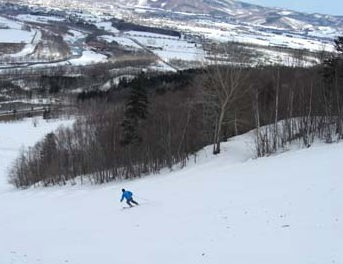 | A | 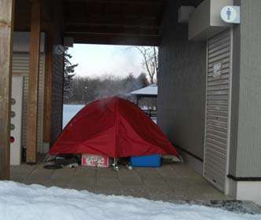 | A | 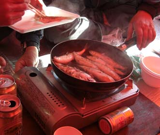 |
| 3月24日午後、オホーツク海を見下ろす スキー場で足ならし(遠軽)AAAAAAAAA |
完璧な棲み家：夕餉の煙が… 外気温は−15℃ |
地魚・コマイを焼く |
| 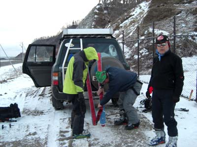 | A | 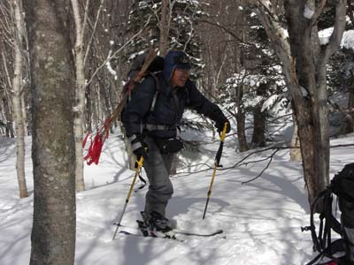 |
| ３月２７日早朝、エゾシカ＝ヒグマの隔離フェンスの戸を こじ開けて、いざ遠音別岳へAAAAAAAAAAAAAAAAAA |
鬱蒼とした原生林の中でリワンデリングしてしまった |
| 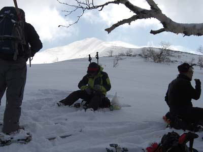 | A | 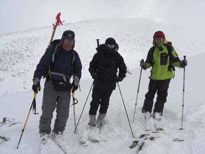 |
| 3月29日、海別岳の頂上は遥か彼方に | 海別岳中退……ガスと風のため、折り返した（1060m) |
| 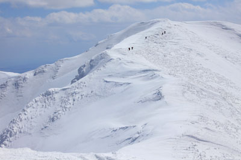 | A | 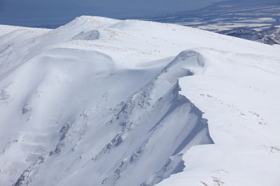 |
| 海別岳の前衛峰への登高 | 本峰から前衛鋒とオホーツク海を見下ろす | |
| ―この2点は4月17日に登頂した北大山の会提供― | ||
| 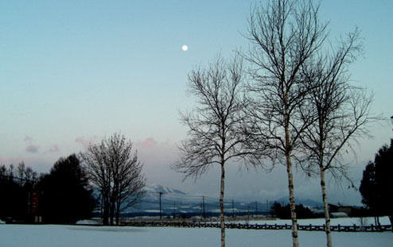 |
| 待てば海路の…知床の山々の夕焼けと満月 |
| 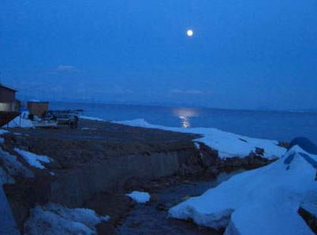 | A | 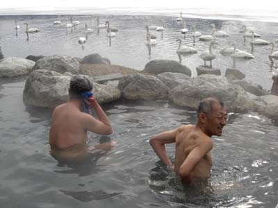 |
| 3月29日、はるか国後に満月が懸かる シマフクロウの 不気味な鳴き声が聞こえたAAAAAAAAAAAAAAAAAA −冬期は無人の相泊港のキャンプサイトにて− |
白鳥たちに見つめられる屈斜路湖の浴槽、 今朝の気温は −22℃ |
| 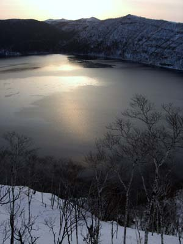 | A | 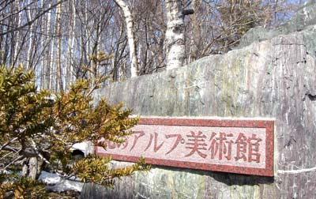 |
| 北のアルプ美術館(斜里町)： 雑誌『アルプ』関連コレクションの展示が充実しています。 こちらの山に登った折にはぜひ立ち寄りを。 オススメです |
||
| 摩周湖の夜明けがはじまる |